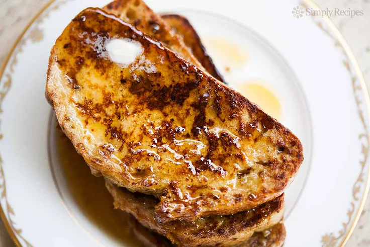

French Toast Recipe

Description
French Toast has a variety of methods of how it can be made. Today, however, we will
learn one of those methods. The dish we are making today is commonly made as a breakfast dish.
A wonderful dish and easy to make, wheather you are in a rush or looking for a quick meal to whip up, this is the
perfect dish that anybody can make.
Ingredients
- 4 Eggs
- 1/4 cup Milk
- 4 tablespoons butter
- 2 tablespoons sugar
- 8 slices bread
- 1/2 cup maple syrup, warmed
- 1 teaspoon ground cinnamon
- 1/2 teaspoon vanilla extract
Steps
- In a small bowl, combine cinnamon and sugar and set aside briefly.
- In a 10-inch or 12-inch skillet, melt butter over medium heat. Whisk together cinnamon mixture, eggs, milk, and vanilla and pour into a shallow container.
Dip bread in egg mixture. Fry slices until golden brown, then flip to cook the other side.
- When ready, serve with syrup.